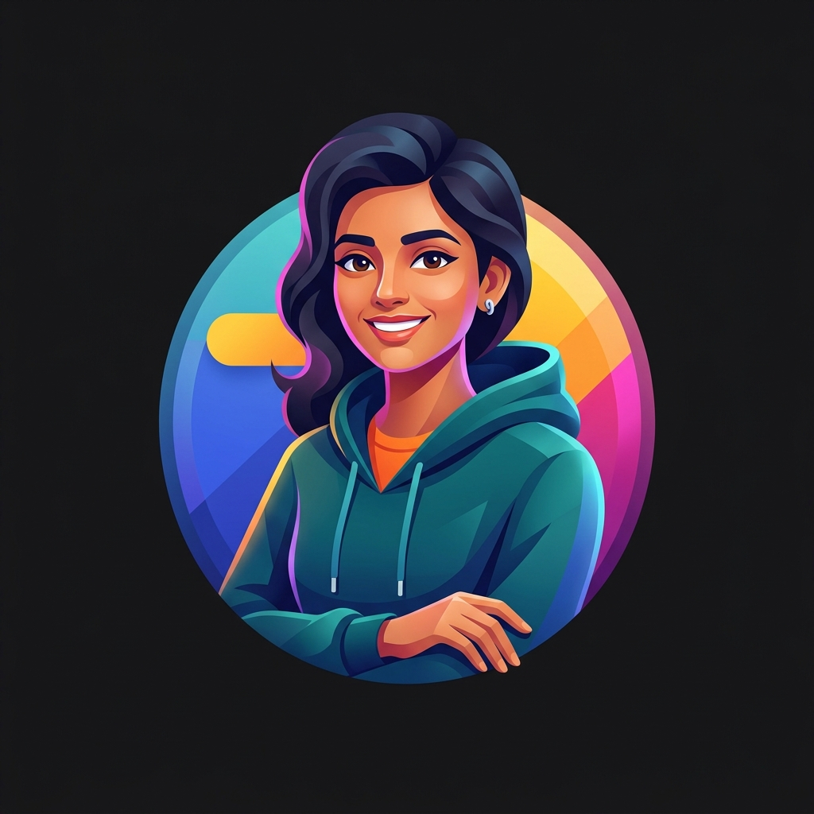

Helping JEE aspirants fix their exam execution, not just their syllabus.
Product Teardown & Case Study by Akshay Dubey
Executive Summary
LastLapJEE is a B2C SaaS mock test platform built for the final sprint of JEE preparation. Traditional platforms diagnose academic gaps (e.g., "Physics is weak"), but fail to identify behavioral flaws. Our core value proposition is an execution analytics engine that tracks stamina decay, repeated mistakes, and classifies errors by test taking behavior. By showing students exactly where they lose marks to poor strategy, we actively force them to improve their question selection, leading to a proven average rank improvement.
To understand why LastLapJEE exists, we must segment the 1.5 million JEE aspirants based on their execution bottlenecks. Traditional EdTech treats them all the same; we do not.
Scores: 50-80 Marks
Fundamental conceptual gaps. They simply haven't completed the syllabus.

Scores: 220+ Marks
They possess natural test taking intuition. Execution is already highly optimized.
Scores: 120-150 Marks
Knows the syllabus perfectly but succumbs to pressure. Ego-battles tough questions and bleeds easy marks due to panic and a flawed exam strategy.
When our ideal user takes a mock test, the current feedback loop on legacy platforms is fundamentally broken. They receive a raw score and an answer key, but no insights into why they failed.
| Stage | Action | Friction Point / Product Gap |
|---|---|---|
| Simulation | Takes a 6-hour mock test on a legacy platform. | High anxiety; the UI does not replicate the actual TCS iON exam environment. |
| Assessment | Receives raw score and binary Answer Key. | High Friction The student has to manually guess why they got a question wrong. Was it a calculation error or a conceptual gap? |
| Intervention | Reads standard textbooks to "revise". | The Blind Loop The student learns more theory, but their bad habit of panicking under pressure remains unchanged. |
We built four specific product levers designed to break the "Blind Loop" and actively force behavioral correction.
Instead of just tagging a mistake as "Physics", we categorize errors by the student's actual behavior. Was it a "Calculation Error"? Or were they "Ego Battling" (spending 8+ minutes on a hard question they ultimately got wrong)?
By explicitly showing a student that they lost 15 minutes of their exam to ego battling, we actively force them to improve their question selection. They realize that skipping a hard question is a strategic win, not a failure. This metric directly changes how they pick questions in the next mock.
JEE Advanced is a brutal 6-hour exam. We map a student's accuracy against the time spent in the exam. We visually show them how their accuracy drops from 85% in the first hour down to 45% in the final 45 minutes.
Once they see this fatigue visualized on a graph, they stop blaming their math skills and start attempting high-weightage sections earlier while their brain is fresh.
Recurrence Tracking: Making a silly mistake once is a data point. Making the exact same calculation mistake across three consecutive mock tests is a fatal habit. We track specific error types across multiple exams and flag them.
Cohort Ranking: Comparing a student who scores 120 marks against the All India Rank 1 is demoralizing. We benchmark students strictly against the 500 students immediately ahead of them, giving them a highly realistic and actionable target.
North Star Metric: Mocks Completed per Activated User
Impact on Final Rank Trajectory
| Acquisition | Click Through Rate (CTR) on ads targeting specific execution pain points. |
| Activation | Free Diagnostic Mock Completion Rate. |
| Retention | Post-Mock Analysis view rate (users return to check their behavioral diagnosis). |
| Revenue | Free to Paid Upgrade Rate for the 20-day sprint package. |
Evaluating the product roadmap to reduce Time to Value (TTV) and increase retention loops.
| Feature | Reach | Impact | Effort | MoSCoW |
|---|---|---|---|---|
| Dynamic Time Trap Simulator: A training mode where each question has a hidden, dynamic time limit (e.g., 2m to 8m) based on its historical complexity. Auto-locks upon breach to actively force question triage and selection strategy. | 100% | High | High | Must Have |
| WhatsApp Insight Nudges: Bypasses login friction to deliver key behavioral metrics instantly. | 100% | Med | Low | Should Have |
| Video Solutions: Standard conceptual teaching. | 80% | Low | High | Won't Have |
While legacy EdTech incumbents are fundamentally content delivery businesses competing on the volume of test papers, LastLapJEE operates as an execution data engine. Our defensibility is rooted in two core advantages:
Solving "Why" creates a structural data advantage that content volume cannot disrupt.